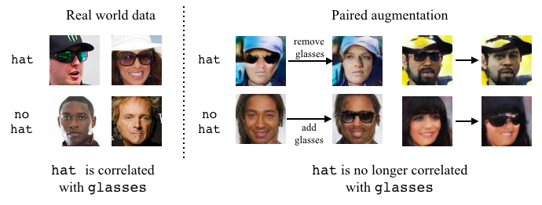
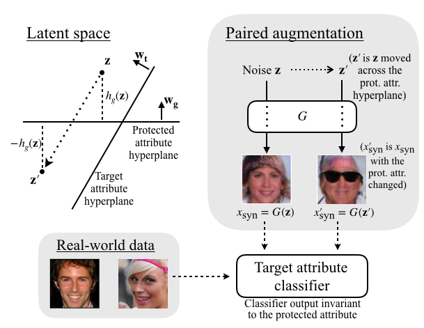
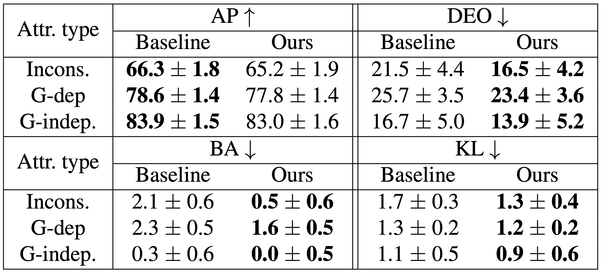

Training a visual classifier for an attribute (e.g., wearing hat) can be complicated by correlations in the training data.
For example, the presence of hats can be correlated with the presence of glasses.
We propose a dataset augmentation strategy using Generative Adversarial Networks (GANs)
that successfully removes this correlation by adding or removing glasses from existing images, creating a balanced dataset.
Paper
Code
2min Talk
10min Talk
Colab Notebook
Abstract
Fairness in visual recognition is becoming a prominent and critical topic of discussion
as recognition systems are deployed at scale in the real world. Models trained from data
in which target labels are correlated with protected attributes (e.g., gender, race) are
known to learn and exploit those correlations. In this work, we introduce a method for
training accurate target classifiers while mitigating biases that stem from these correlations.
We use GANs to generate realistic-looking images, and perturb these images in the underlying
latent space to generate training data that is balanced for each protected attribute.
We augment the original dataset with this perturbed generated data, and empirically
demonstrate that target classifiers trained on the augmented dataset exhibit a number
of both quantitative and qualitative benefits. We conduct a thorough evaluation across
multiple target labels and protected attributes in the CelebA dataset, and provide an
in-depth analysis and comparison to existing literature in the space.
Citation
@inproceedings{ramaswamy2020gandebiasing,
author = {Vikram V. Ramaswamy and Sunnie S. Y. Kim and Olga Russakovsky},
title = {Fair Attribute Classification through Latent Space De-biasing},
booktitle = {IEEE/CVF Conference on Computer Vision and Pattern Recognition (CVPR)},
year = {2021}
}
5-Minute Talk
Creating a De-biased Dataset to Train Fairer Attribute Classifiers
We propose a method for perturbing latent vectors in the GAN latent space that successfully
de-correlates target and protected attributes and allows for augmenting and de-biasing the real-world dataset.

(Top left) The trained GAN learns a distribution from which it samples z.
For each z sampled, we compute z' such that its target attribute (e.g., wearing hat) score remains the same according to wa,
while its protected attribute (e.g., wearing glasses) score is negated according to wg.
(Top right) We add images G(z) and G(z') to our training set, and train a target classifier on both the real-world dataset
and the balanced synthetic dataset generated through our paired augmentation method.
Results
In the below table, we compare our model (i.e. target classifier trained on both the real-world dataset and the balanced synthetic dataset)
with a baseline model trained on the real-world dataset. We evaluate the models with four metrics: average precision (AP),
difference in equality of opportunity (DEO), bias amplification (BA), and KL divergence between score histograms (KL).
The results are averaged for each attribute category: inconsistently labeled, gender-dependent, and gender-independent.

Our model performs better on all three fairness metrics, DEO, BA and KL, while maintaining comparable AP.
We provide an in-depth analysis of our method and comparison to existing literature in the paper.
Our findings show the promise of augmenting data in the GAN latent space in a variety of settings.
Related Work
Below are some papers related to our work. We discuss them in more detail in the related work section of our paper.
This work is supported by the National Science Foundation under Grant No. 1763642
and the Princeton First Year Fellowship to SK. We also thank Arvind Narayanan, Deniz Oktay,
Angelina Wang, Zeyu Wang, Felix Yu, Sharon Zhang, as well as the Bias in AI reading group for
helpful comments and suggestions.